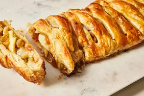

Apple Strudel

Description:
A sweet, flaky pastry that pairs well with both coffee and tea.
Ingredients:
- 2 Honey Crisp apples, peeled, cored, and diced
- 1 Granny Smith apple, peeled, cored, and diced
- 1 tablespoon lemon juice
- 3 tablespoons honey
- 3 tablespoons sugar
- 2 vanilla beans
- 1 teaspon cinnamon
- 2 tablespoons cornstarch
- 2 tablespoons butter
- 2 sheets of puff pastry, thawed
- 1 egg
- 1 tablespon of milk
Steps:
- Preheat oven to 400F. In large bowl, combine apples, lemon juice, honey, sugar, vanilla bean, cinnamon, and cornstarch
- In large pan over medium heat, melt butter and add apple mixture, cooking until apples become tender and liquid has thickened
- Strain apples with fine mesh strainer and drain, then deposit apples in a bowl to cool.
- Unfold sheet of puff pastry on parchment paper. Place half the filling in the center third of pastry. Cut 8 horizontal
strips of the pastry. Cross the strips over filling by alternating from the left and right sides. Repeat until all strips are crossed
and filling sealed. Trim excess dough and repeat with second pastry and remainder of filling.
- In small bowl, whisk egg and milk. Brush each pastry with mixture and bake until golden brown, 25 to 30 minutes. Transfer to wire
rack before cutting
- Enjoy!